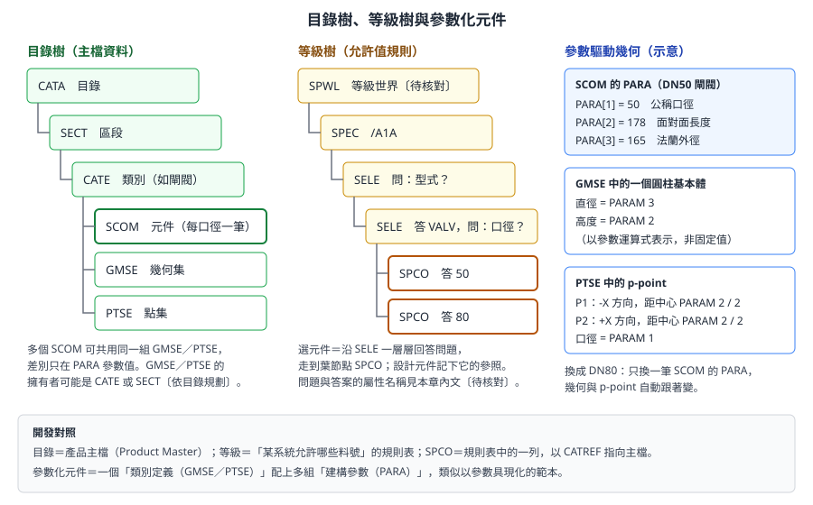
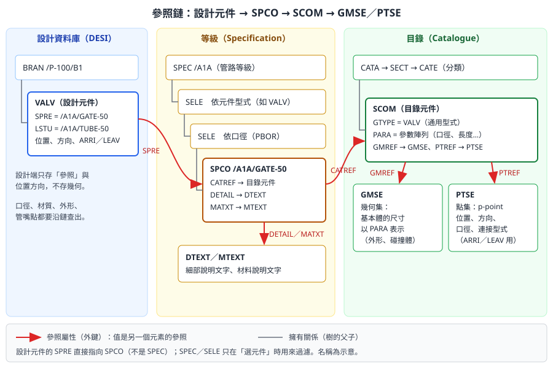

第 8 章 目錄與等級
本章回答兩個問題：設計中的每一個元件（閥、彎頭、法蘭、型鋼）從哪裡來，以及等級如何約束設計。目錄（Catalogue）與等級（Specification）是舾裝資料的主檔與規則層；設計者不能任意建立元件，必須從等級選用，而等級又引用目錄中的元件定義。看懂這條參照鏈，才能寫出正確的材料表、檢查工具與報表。
本章依據 AVEVA E3D 2.1 的 Catalogues and Specifications Reference Manual（CSRM）、Catalogues and Specifications User Guide（CSUG）、Data Model Reference（DMRM），以及 AVEVA Hull and Outfitting 12.1 線上文件自主撰寫，不是官方手冊的翻譯。E3D 與 Marine 舾裝的目錄觀念相通，但介面與細節可能不同，需在公司版本中確認。標示 〔待核對〕 的項目請以公司專案設定為準。目錄與等級的修改只能由授權的管理員在測試專案中進行。
8.1 學習目標
讀完本章，你應該能夠：
- 說明目錄與等級存在的理由，並用「主檔資料」與「允許值規則」的觀念解釋它們。
- 畫出目錄階層
CATA → SECT → CATE → SCOM，並說明幾何集（GMSE）與點集（PTSE）的角色。 - 說明參數化元件：
PARA參數如何驅動幾何與連接點。 - 畫出等級階層
SPEC → SELE → SPCO，並說明選擇條件（問題與答案，例如型式與口徑）。 - 從一個設計元件出發，沿
SPRE → SPCO → CATREF → SCOM → GMREF／PTREF一路查到幾何與連接點。 - 列出型鋼、材料、螺栓、保溫等其他目錄與等級。
- 說明目錄管理的權限與變更流程。
- 解釋為什麼工具不應自行建立「看起來像」的元件。
8.2 為什麼需要目錄與等級
想像一個沒有目錄與等級的世界：每位設計者自己畫一個閘閥的外形，自己填口徑與材質。結果會是：
- 同一個閥在材料表上出現十種寫法，採購無法合併。
- 高壓系統裡被畫進了低壓閥，沒有人發現。
- ISO 圖不知道這個「閥」的連接點在哪裡，無法計算切管長度。
目錄與等級就是為了避免這些問題。三層資料的分工如下：
| 層級 | 內容 | 誰維護 | 開發類比 |
|---|---|---|---|
| 目錄 Catalogue | 元件的幾何（參數化）、連接點、屬性 | 目錄管理員 | 產品主檔（Product Master） |
| 等級 Specification | 某管路系統允許使用哪些元件、口徑範圍、材質、壓力等級 | 管材／系統工程師與管理員 | 允許值規則表、白名單 |
| 設計 Design | 實際的管線與元件，引用等級中的項目 | 設計者 | 交易資料（訂單明細） |
官方文件的說法是：在設計模組中選用元件時，系統會記錄一個規格參照（SPREF），存在設計資料庫中；這個參照指向等級中的一筆等級元件（SPCOM），而等級元件再指向目錄中的目錄元件（例如 SCOM）。目錄與等級可以是公司層級的標準，跨多個專案共用；設計資料則屬於單一專案。
專業提醒： 設計中如果找不到需要的元件，正確的做法是向目錄管理員提出需求，而不是用基本體湊出一個外形相似的物件。後者會讓材料表、管段圖與採購資料全部失真。
8.3 目錄階層
8.3.1 目錄資料庫的結構
目錄存放在 CATA 類型的資料庫中（第 2 章）。常見的階層如下：
CATA 目錄
└── SECT 區段（例如「閥類」「管件類」）
├── CATE 類別（例如「法蘭端閘閥」）
│ ├── SCOM 目錄元件（例如每個口徑一筆）
│ ├── GMSE 幾何集（3D 外形）
│ ├── PTSE 點集（連接點）
│ └── DTSE 資料集（可選）
└── ...
官方 CSRM 的例子以 PTSE 4 OF SECT 2 OF CATA /ASA-CATA 這樣的識別方式引用點集，說明點集可以直接放在 SECT 之下。CSRM 也把點集與幾何集歸類為「區段與類別都可使用的元素」，所以 GMSE、PTSE 放在 CATE 或 SECT 之下都有，依目錄的規劃方式而定〔待核對：公司目錄的實際放法〕。

圖 8-1 左為目錄樹（主檔資料），中為等級樹（允許值規則），右為參數如何驅動幾何與連接點。（本課程自繪，名稱與數值為示意）
8.3.2 目錄元件的四個類別
依 CSRM，目錄元件分為四類：
| 類別 | 常見元素型別 | 用途 |
|---|---|---|
| 管路元件（Piping Component） | SCOM |
管件、閥、法蘭、墊片、管嘴等 |
| 型材（Profile） | SPRF |
結構型鋼斷面 |
| 接頭（Joint） | SJOI |
結構構件之間的連接 |
| 配件（Fitting） | SFIT |
結構上的附屬配件 |
CSRM 也說明了兩個重要的規則：目錄元件沒有成員元素；目錄元件本身的屬性（參數以外）必須是實際值（字詞或對其他元素的參照），不能用參數定義。
8.3.3 目錄元件的關鍵屬性
依 CSRM 對目錄元件的屬性說明：
| 屬性 | 意義 |
|---|---|
GTYPE |
通用型式（Generic Type），例如 VALV、ELBO、FLAN；設計端元件的型別要與它相符 |
PARA（PARAM） |
元件參數，一串數值，供點集與幾何集使用 |
PTREF |
指向 3D 點集（PTSE）的參照 |
GMREF |
指向 3D 幾何集（GMSE）的參照 |
DTREF |
指向資料集（DTSE）的參照 |
8.3.4 幾何集（GMSE）與點集（PTSE）
CSRM 的定義可以摘要如下：
- 3D 點集（Pointset）：定義元件 p-point 的位置、方向、連接型式與口徑，供設計模組、ISODRAFT 等使用。
- 3D 幾何集（Geomset）：一組 3D 基本體，定義每個基本體的尺寸、方向與障礙（碰撞）幾何。
用開發人員的話說：
| 目錄元素 | 類比 | 被誰使用 |
|---|---|---|
PTSE |
元件的「介面定義」：有幾個接口、在哪裡、朝哪裡、什麼規格 | 佈管時的連接、ARRI／LEAV、ISO 圖、連接檢查 |
GMSE |
元件的「外觀與碰撞體」 | 3D 顯示、圖面、干涉檢查 |
第 7 章提到元件的 ARRI／LEAV 是 p-point 編號，它們的意義就定義在 PTSE 中。
8.4 參數化元件
8.4.1 參數驅動幾何
目錄不會為每個口徑畫一次閥。做法是：一組 GMSE／PTSE 定義形狀與接口的「公式」，每一筆 SCOM 提供一組參數值。例如：
| 位置 | 內容（示意） |
|---|---|
SCOM（DN50 閘閥）的 PARA |
[1] 50 公稱口徑、[2] 178 面對面長度、[3] 165 法蘭外徑 |
GMSE 中的圓柱基本體 |
直徑 = PARAM 3，高度 = PARAM 2 |
PTSE 中的 p-point |
P1 在 -X 方向距中心 PARAM 2 / 2；P2 在 +X 方向距中心 PARAM 2 / 2；口徑 = PARAM 1 |
換成 DN80 閘閥時，只要再建一筆 SCOM，給一組不同的 PARA，就能共用同一組 GMSE／PTSE。這就是參數化元件。
開發人員須知： 參數化元件很像「類別定義加上建構參數」：
GMSE／PTSE是類別，SCOM的PARA是建構參數，設計中的元件是實例。所以要知道某個閥的實際長度，不能只看SCOM，要把PARA代入GMSE的運算式才得到結果。通常應透過系統提供的屬性或偽屬性取得計算後的值，而不是自己解析運算式〔待核對：公司版本可用的偽屬性〕。
8.4.2 三種參數
CSRM 說明，點集與幾何集的屬性可以用三種參數定義：
| 參數種類 | 存在哪裡 | 例子 |
|---|---|---|
| 元件參數（Component Parameters） | 目錄元件的 PARA |
口徑、面對面長度 |
| 設計參數（Design Parameters） | 設計資料庫中的元件 | 可變長度的元件，由設計者給定長度 |
| 保溫參數（Insulation Parameters） | 保溫等級 | 保溫厚度 |
元件參數可以是數值、運算式或字詞；保溫、結構與設計參數只能是數值或運算式。第 5 章看到 HSTIFF 有 Desparam（設計參數）屬性，正是同一個觀念在船體元素上的體現。
8.4.3 目錄的建立方式
CSRM 說明，目錄通常以目錄巨集（Catalogue Macros）的形式建立成一個函式庫，專案的目錄資料庫再從這些巨集中挑選組成。建立與修改目錄資料庫的工具是 Paragon 模組（第 1 章的管理模組之一）。
8.5 等級階層
8.5.1 等級的結構
等級存在 CATA 類型的資料庫中（與目錄同類型，但通常是不同的 DB）。結構如下：
SPWL 等級世界〔元素代碼待核對〕
└── SPEC 一份等級，例如 /A1A（某壓力、某材質的海水管等級）
└── SELE 選擇器：問「型式？」
└── SELE 選擇器：答 VALV，再問「口徑？」
├── SPCO 答 50 → 指向 DN50 閘閥
└── SPCO 答 80 → 指向 DN80 閘閥
依 DMRM，選擇器（SELEC）的合法擁有者是 SPEC 或另一個 SELEC，合法成員是 SELEC 或等級元件（SPCOMPONENT，簡稱 SPCO）。選擇器帶有下列屬性：
| 屬性 | 意義 |
|---|---|
Question |
這一層要問的問題（例如依型式或口徑分支） |
Answer／Maxanswer |
數值答案（可為範圍） |
Tquestion／Tanswer |
文字型的問題與答案 |
Default／Tdefault |
預設答案 |
Qtype |
問題的型別 |
用開發人員的話說，等級就是一棵決策樹：設計者選元件時，系統沿著 SELE 一層層回答問題（型式？口徑？端部型式？），走到葉節點 SPCO，再把它的參照寫進設計元件的 SPRE。
8.5.2 等級元件 SPCO
SPCO 是等級的葉節點，也是設計元件 SPRE 實際指向的對象。依官方文件，它的關鍵屬性有：
| 屬性 | 指向 | 說明 |
|---|---|---|
CATREF |
目錄元件（SCOM、SPRF 等） |
唯一必填的指標 |
DETAIL |
細部文字（DTEXT） |
元件的說明文字，用於材料表 |
MATXT |
材料文字（MTEXT） |
材料說明，用於材料表 |
BLTREF |
螺栓需求（BLTAB） |
法蘭連接需要的螺栓 |
CMPREF |
元件性質（CMPT，位於 Properties DB） |
重量等物理性質 |
PRTREF |
零件需求 | 〔用途依公司設定，待核對〕 |
官方 E3D 文件也提醒：建立 SPCO 時，若 CATREF 指向的目錄元件不存在，會出現 Undefined Name 錯誤，CATREF 會顯示為 =0。這是目錄與等級不同步時最常見的徵兆。
8.5.3 等級的類型
| 等級類型 | 用途 |
|---|---|
| 管路等級 | 管件、閥、法蘭、墊片，設在 PIPE 的 PSPE |
| 保溫等級 | 依溫度與口徑決定保溫厚度，設在 ISPE |
| 伴熱等級 | 伴熱需求，設在 TSPE |
| 結構型鋼等級 | 鐵舾裝 SCTN 選用的型鋼斷面 |
| 電纜托架、支架等級 | 依公司設定〔待核對〕 |
官方文件說明，AVEVA Catalogue Manager 可儲存、管理並發佈等級，並與 AVEVA Marine 整合；可匯入的等級類型包括管路、螺栓、電纜托架、保溫與結構。等級核准後會自動發佈到設計端，必要時也可以手動執行「Republish Spec to Design」重新發佈。
8.5.4 等級的表格觀點
管理員維護等級時，常以「表格」的形式思考：每一列是一筆 SPCO，欄位是各層選擇器的答案與各種參照。以下為示意，欄位名稱與格式不是官方的等級檔案語法：
| 型式（TYPE） | 口徑（PBOR） | SPCO 名稱 | CATREF | DETAIL | MATXT |
|---|---|---|---|---|---|
| VALV | 50 | /A1A/GATE-50 |
/CAT/GV-FL-50 |
/DT/GATE-VALVE |
/MT/BRONZE |
| VALV | 80 | /A1A/GATE-80 |
/CAT/GV-FL-80 |
/DT/GATE-VALVE |
/MT/BRONZE |
| ELBO | 50 | /A1A/ELBO-50 |
/CAT/EL90-50 |
/DT/ELBOW-90 |
/MT/STEEL |
這張表說明了幾件事：
- 選擇器的問題就是表格的前幾欄：型式與口徑決定走到哪一列。
CATREF是每一列唯一必填的參照，其他參照可以留空。- 多列可以共用同一份文字：例如所有口徑的閘閥共用同一筆
DTEXT。
〔待核對〕Marine 12.x 中等級的建立與匯入方式（Specon 文字檔、Catalogue Manager 匯入等），請以公司管理員的作業方式為準。
8.6 參照鏈：從設計元件一路查到幾何
8.6.1 整條鏈

圖 8-2 參照鏈。紅色箭頭是參照屬性（外鍵），灰色線是擁有關係（樹的父子）。設計元件的 SPRE 直接指向 SPCO，SPEC／SELE 只在選元件時用來過濾。（本課程自繪，名稱為示意）
用 SQL 的話說，這是一串 JOIN：
-- 示意：用 SQL 比喻參照鏈，不是可執行的查詢
SELECT d.name, s.detail, c.gtype, c.para, g.*, p.*
FROM design_component d
JOIN spco s ON d.spre = s.ref -- 設計 → 等級
JOIN scom c ON s.catref = c.ref -- 等級 → 目錄
JOIN gmse g ON c.gmref = g.ref -- 目錄 → 幾何集
JOIN ptse p ON c.ptref = p.ref; -- 目錄 → 點集
8.6.2 用 PML 走一遍參照鏈
-- 示意：未在實機驗證。從一個閥沿參照鏈查到目錄元件
-- 只讀取，不修改任何資料
!valve = /P-100/B1/VALV1 -- 請換成訓練專案中的元件名稱
!spco = !valve.spre -- 設計 → 等級元件
if (!spco.isNull()) then
$p 這個元件沒有 SPRE，請檢查
return
endif
!scom = !spco.catref -- 等級元件 → 目錄元件
!msg = 'SPCO : ' & !spco.name
$p $!msg
!msg = 'SCOM : ' & !scom.name & ' GTYPE=' & !scom.gtype
$p $!msg
!msg = 'GMREF: ' & !scom.gmref.string() & ' PTREF: ' & !scom.ptref.string()
$p $!msg
q PARA of $!scom -- 以命令列查詢顯示參數陣列
在命令列中也可以逐步查詢：先 Q SPRE 取得等級元件名稱，跳到該元件後 Q CATREF，再跳到目錄元件 Q PARA、Q GMREF、Q PTREF。〔待核對〕.isNull() 的寫法、PARA 陣列的輸出格式，請在公司版本確認；導覽與屬性讀取見第 12 章。
開發人員須知： 參照鏈中任何一環斷掉（
SPRE為空、CATREF為=0、目錄元件被刪除），下游的材料表、ISO 圖、碰撞檢查都會出錯。寫報表或檢查工具時，每一步都要檢查參照是否為空，並把斷鏈的元件列入例外清單，而不是讓程式中斷或默默跳過。
8.6.3 斷鏈與常見問題排除
| 現象 | 可能原因 | 檢查方式 |
|---|---|---|
| 元件在 3D 中看不到或顯示異常 | SPRE 為空，或 GMREF 指向不存在的幾何集 |
沿參照鏈逐一查詢 |
| 材料表缺少某元件 | SPRE 為空，或 SPCO 沒有 DETAIL／MATXT |
查 SPCO 的文字參照 |
| ISO 圖無法連接 | PTSE 的 p-point 方向或連接型式錯誤 |
查 PTREF 與點集內容 |
CATREF 顯示 =0 |
建立 SPCO 時目錄元件尚不存在 |
確認目錄元件名稱後重新設定 |
| 設計者的 MDB 看不到等級 | MDB 未包含等級 DB | 請管理員檢查 MDB（第 2 章） |
8.7 其他目錄與參考資料
管路元件只是目錄的一部分。完整的專案還有：
| 類型 | 內容 | 與設計的關係 |
|---|---|---|
| 型鋼目錄 | 型鋼斷面（SPRF）、接頭（SJOI）、配件（SFIT） |
鐵舾裝 SCTN 經等級引用 |
| 螺栓表 | 法蘭連接所需的螺栓規格與數量（BLTAB） |
SPCO 的 BLTREF 引用 |
| 材料性質 | 密度等性質，存在 PROP 類型資料庫（CMPT） |
SPCO 的 CMPREF 引用，用於重量計算 |
| 文字 | 細部文字（DTEXT）、材料文字（MTEXT） |
材料表與 ISO 圖的說明欄 |
| 保溫 | 保溫等級與厚度規則 | ISPE 引用 |
| 船體標準 | 型材斷面、肘板型式、端部處理型式等船體標準 | 船體建模引用〔存放方式與舾裝目錄不同，依版本待核對〕 |
8.8 目錄管理的權限與流程
8.8.1 權限
| 角色 | 對目錄 DB | 對等級 DB | 對設計 DB |
|---|---|---|---|
| 目錄管理員 | 讀寫 | 讀寫 | 讀 |
| 管材／系統工程師 | 讀 | 依公司規定審核 | 讀 |
| 設計者 | 讀 | 讀 | 讀寫（自己的 ZONE） |
| 工具開發者 | 讀 | 讀 | 依工具用途 |
權限由 Team 擁有 DB、MDB 組合決定（第 2 章）。設計者的 MDB 中，目錄與等級 DB 通常只能讀。
8.8.2 變更流程
- 設計者提出需求（缺少的元件、口徑、型式），附上廠商資料。
- 目錄管理員在測試專案中建立或修改目錄元件與等級。
- 系統或管材工程師審核等級。
- 發佈到正式專案，通知設計者。
- 記錄變更，供日後追溯。
專業提醒： 不要刪除或改名已被設計使用的
SPCO或目錄元件。被參照的元素消失後，設計元件的SPRE或CATREF會失去對象，造成大量斷鏈。需要淘汰元件時，應先查詢使用情況，改以「停止在等級中提供」的方式處理〔具體做法依公司規範，待核對〕。
8.9 開發人員須知：為什麼工具不應自行建立「看起來像」的元件
開發自動建模工具時，常見的誘惑是：等級裡找不到合適的元件，就用基本體在設計資料庫中「畫」一個外形相同的東西。這樣做的後果：
| 下游 | 會發生什麼 |
|---|---|
| 材料表（MTO） | 這個物件沒有 SPRE，不會出現在材料表，或以錯誤名稱出現 |
| ISO 圖 | 沒有 PTSE，Isodraft 不認得它的接口，無法計算切管長度 |
| 連接檢查 | 沒有連接型式與口徑資訊，檢查會報錯或漏報 |
| 採購 | 採購清單沒有這個料號 |
| 重量重心 | 沒有 CMPREF，重量不正確 |
| 未來修改 | 等級更新不會影響它，它永遠停在被畫出來的那一刻 |
正確的做法：
- 工具只從等級中選用元件，寫入
SPRE。 - 找不到元件時，工具停止並回報「缺少等級項目」，而不是自行補一個。
- 需要特殊元件時，走 8.8.2 節的變更流程。
- 工具的測試要包含「等級中沒有對應元件」的情況。
開發人員須知： 對程式來說，「看起來一樣」和「是同一個東西」完全不同。資料庫中一筆沒有外鍵的資料，在所有下游系統眼中都不存在。這和在 ERP 中手打一個沒有料號的品名是一樣的錯誤。
8.10 練習（只能在訓練專案）
練習 8-1：追蹤一個閥門的來源
- 在訓練專案中選一個閥門。
- 查出它的
SPRE指向哪個SPCO，該SPCO屬於哪個SPEC，沿途經過哪些SELE，每一層的問題與答案是什麼。 - 查出
SPCO的CATREF指向哪個目錄元件，記錄它的GTYPE與PARA。 - 找出它的
GMSE與PTSE，記錄點集中有幾個 p-point。 - 對照設計中這個閥的
ARRI／LEAV，說明它們對應PTSE中的哪些點。
練習 8-2：比較兩個口徑
- 找出同一
CATE中兩個不同口徑的SCOM。 - 比較它們的
PARA、GMREF、PTREF。 - 說明哪些相同、哪些不同，以及為什麼。
練習 8-3：斷鏈檢查
- 執行 8.6.2 節的 PML 範例，改寫成對一個
ZONE內所有管路元件執行。 - 列出
SPRE為空或CATREF為空的元件。 - 討論：發現斷鏈時，工具應該怎麼回報？
8.11 自我檢核
- [ ] 我能用「主檔資料」與「允許值規則」解釋目錄與等級。
- [ ] 我能畫出
CATA → SECT → CATE → SCOM，並說明GMSE與PTSE的角色。 - [ ] 我能說明
GTYPE、PARA、GMREF、PTREF的意義。 - [ ] 我能解釋參數化元件，以及元件參數、設計參數、保溫參數的差別。
- [ ] 我能畫出
SPEC → SELE → SPCO，並說明選擇器的問題與答案。 - [ ] 我能說明
SPCO的CATREF、DETAIL、MATXT、BLTREF、CMPREF。 - [ ] 我能從設計元件沿參照鏈查到幾何集與點集。
- [ ] 我能列出型鋼、螺栓、材料、保溫等其他目錄。
- [ ] 我能說明目錄管理的權限與變更流程。
- [ ] 我能說明為什麼工具不應自行建立「看起來像」的元件。
資料來源
- AVEVA E3D 2.1 Catalogues and Specifications Reference Manual：Catalogue Database Structure、目錄、等級與設計資料的關係、Catalogue Components、Fitting（PTREF、GMREF、PARAM、GTYPE、DTREF）、Elements Used in Both Types of Catalogue Section/Category（Pointset 與 Geomset 定義）、SPCOmponent and the Component Data（SPCO 的指標）
- AVEVA E3D 2.1 Catalogues and Specifications User Guide：SPREF、SPCOM 與目錄元件
- AVEVA E3D 2.1 Data Model Reference：Selector Element (SELEC)、Specification Component Element (SPCOMPONENT)
- AVEVA Hull and Outfitting 12.1 線上文件：Specification Component Element、Catalogue Manager 與 Marine 整合、Republish Spec to Design（需以瀏覽器開啟）
- AVEVA E3D Design 線上文件：CATREF 說明（需以瀏覽器開啟）